Dokumentasi TPQ
Momen-momen kegiatan Taman Pendidikan Al-Qur'an

Santri Mengaji
Santri TPQ sedang belajar membaca Al-Qur'an

Belajar Al-Qur'an
Suasana belajar mengaji santri TPQ

Santri TPQ
Santri TPQ bersemangat dalam belajar

Mengaji Bersama
Kebersamaan santri dalam mengaji
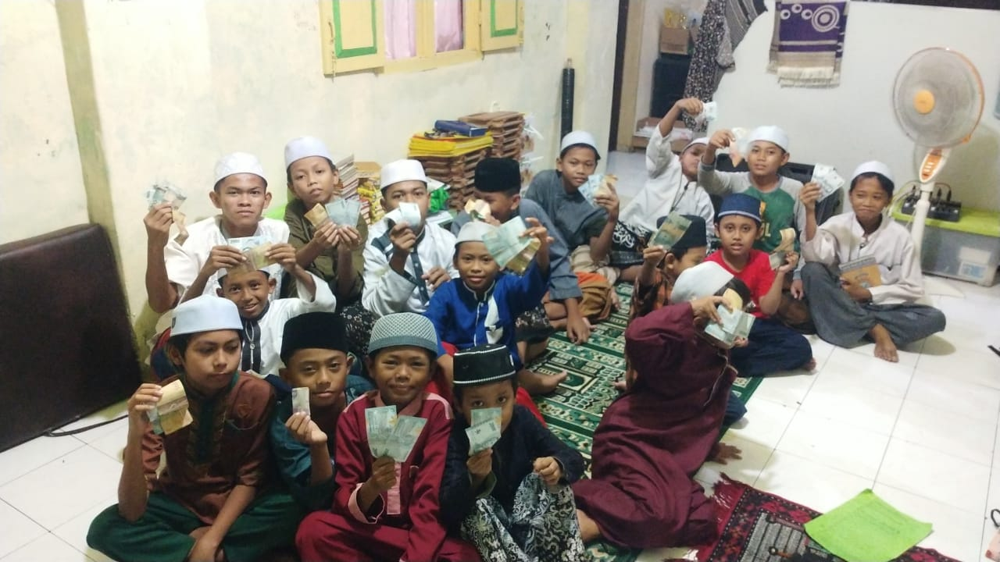
Pembelajaran Al-Qur'an
Proses belajar mengajar TPQ
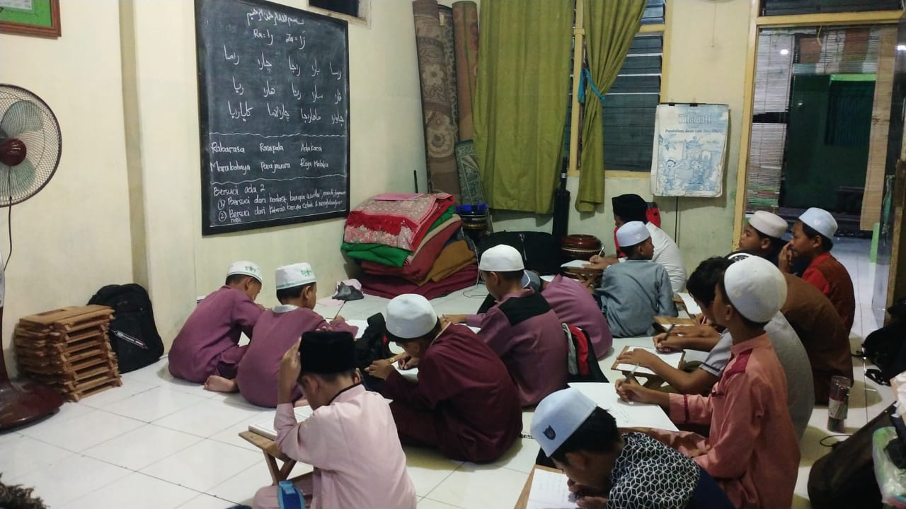
Santri Belajar
Santri tekun belajar membaca Al-Qur'an
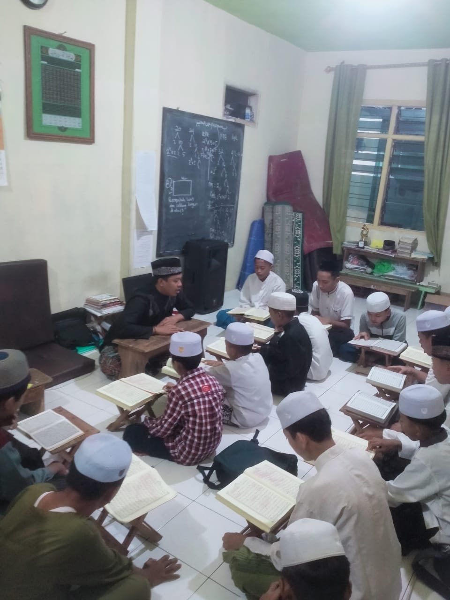
Santri Ngaji
Kegiatan mengaji santri TPQ
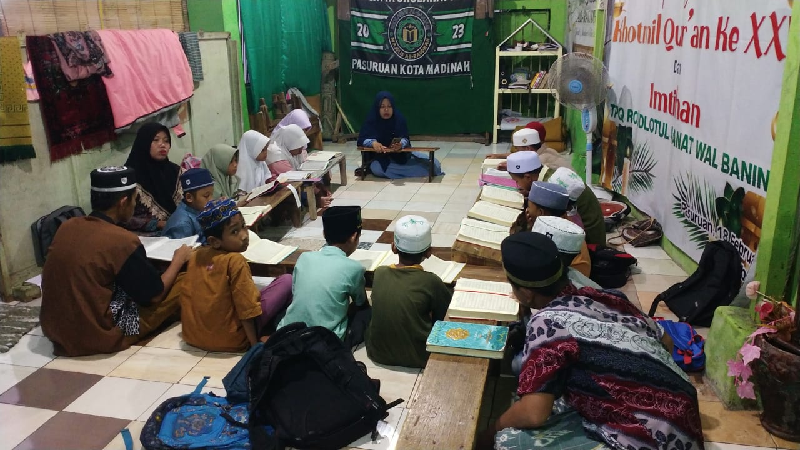
Ngaji Santri
Santri fokus dalam pembelajaran
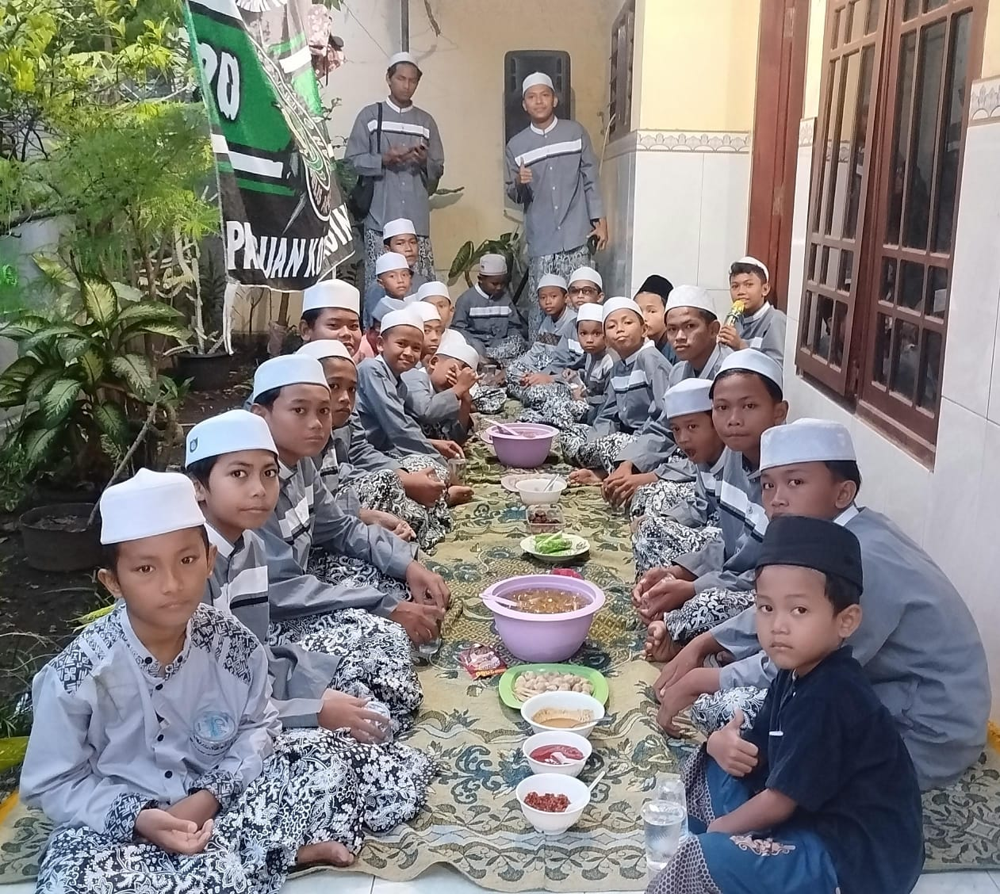
Makan Bersama
Kegiatan makan bersama santri TPQ
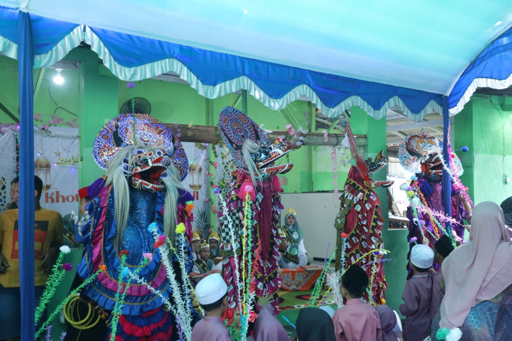
Acara Rutinan
Kegiatan rutin mingguan TPQ & MADIN
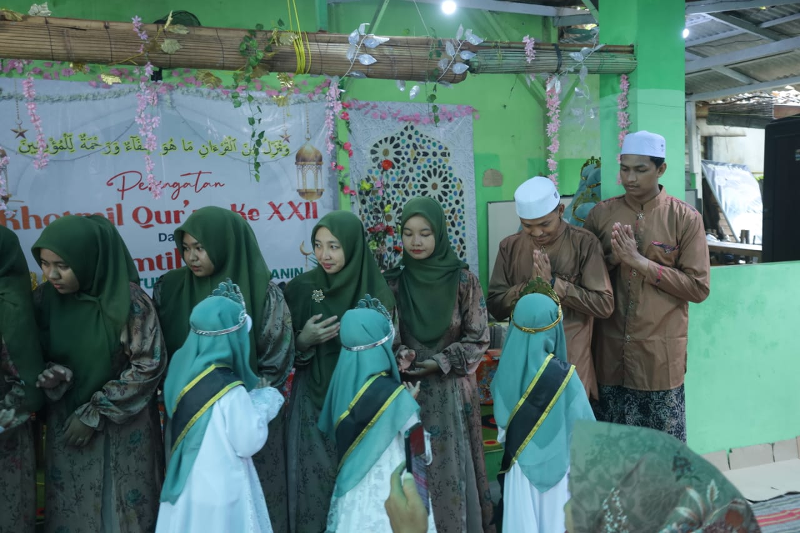
Kegiatan Rutin
Suasana acara rutin lembaga
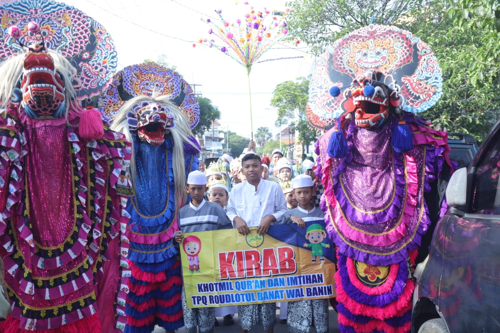
Acara Rutin Lembaga
Momen kebersamaan dalam acara rutin

Rutinan TPQ
Kegiatan rutin TPQ & MADIN

Acara Rutinan Santri
Kumpulan santri dalam acara rutinan

Al-Banjari
Penampilan grup rebana Al-Banjari

Penampilan Al-Banjari
Grup Al-Banjari tampil di acara

Rebana Al-Banjari
Penampilan rebana Al-Banjari
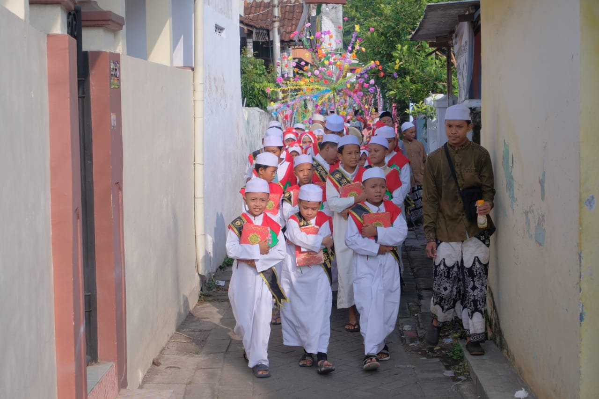
Alumni TPQ
Foto bersama alumni TPQ
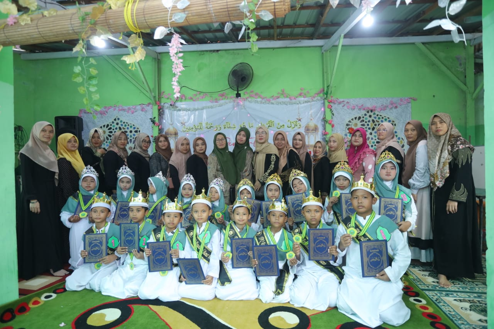
Alumni MADIN
Foto bersama alumni MADIN
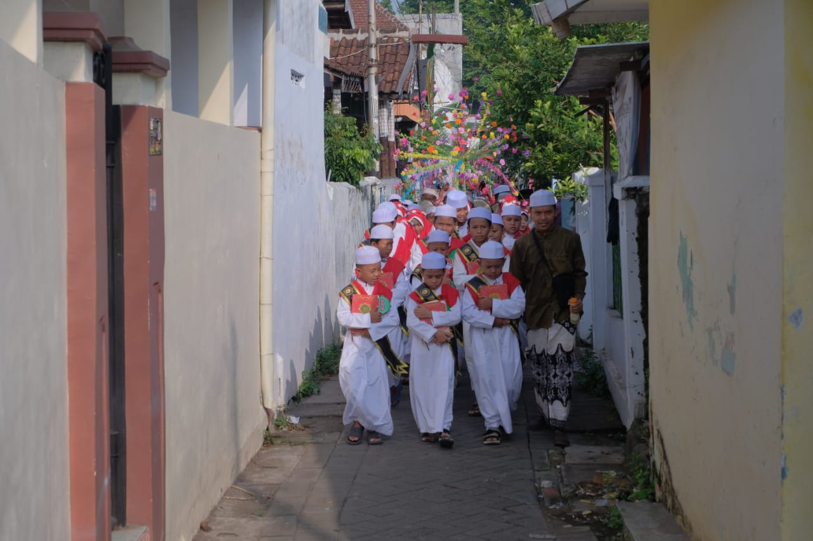
Wisuda Alumni
Acara wisuda alumni TPQ & MADIN
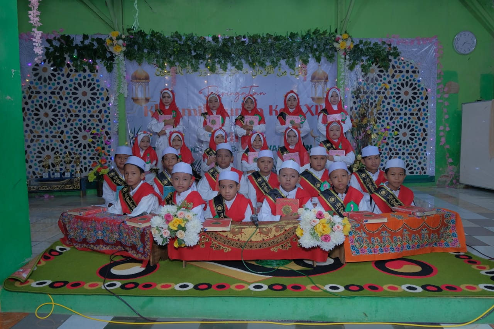
Pelepasan Alumni
Acara pelepasan alumni TPQ & MADIN